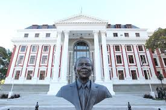
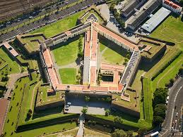
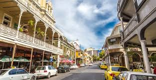

SINOVUYO PLENIS

I chose Dubai firstly because it has the lowest or 0% crime rate, and I personally am not a fan of all of that. Dubai is such a beautiful and elegant place and I'm imagining peaceful as well. There are many beautiful places that I can go to and many adventurous things that I can do as well. Dubai is famous for sightseeing attractions such as the Burj Khalifa (the world's tallest building) and shopping malls that come complete with mammoth aquariums and indoor ski slopes.
| English | Korean | Korean Pronouciation | Hello | 여보세요 | annyeonghaseyo |
|---|---|---|
| God bless you | 신의 축복이있어 | pokmani patiseyoe | Thank you | 고맙습니다 | kamsahamnida |


